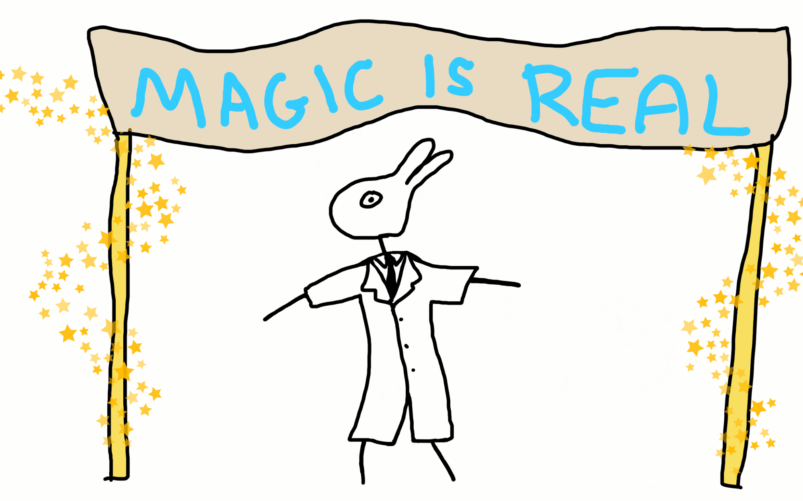
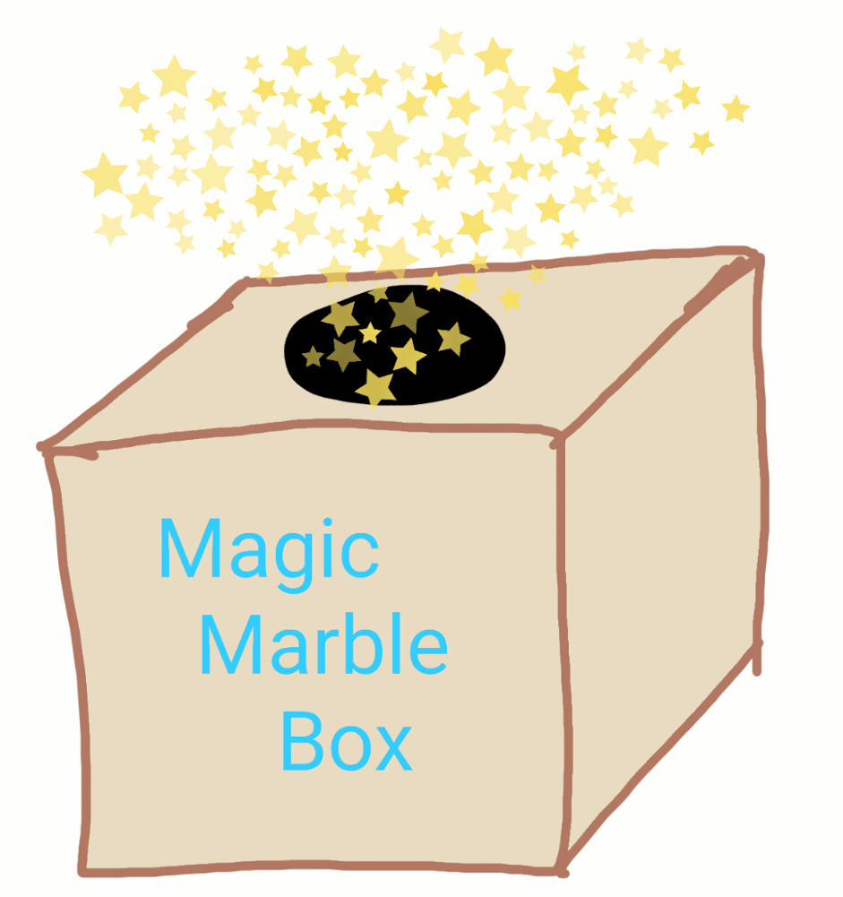
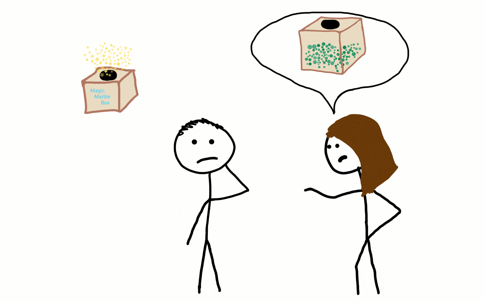
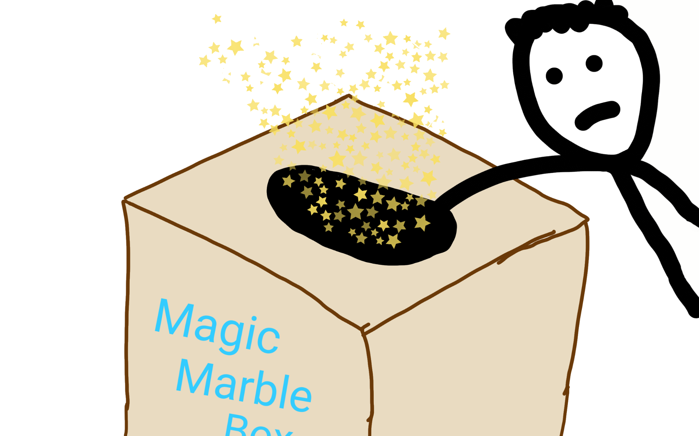
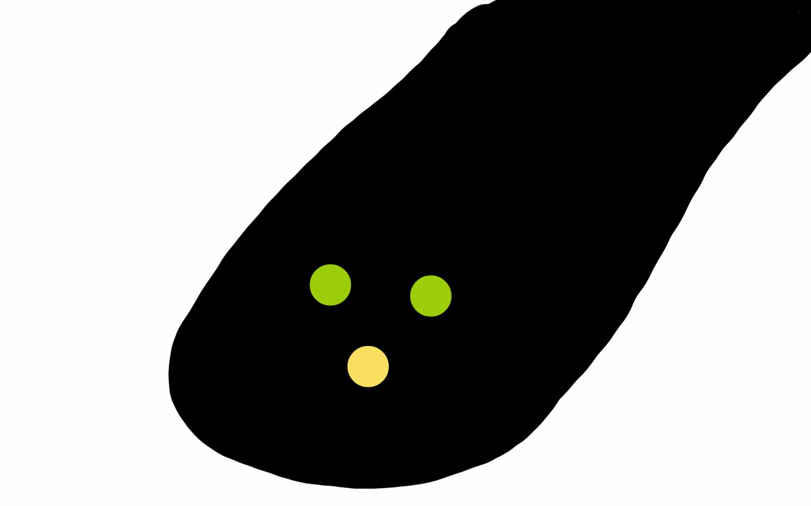
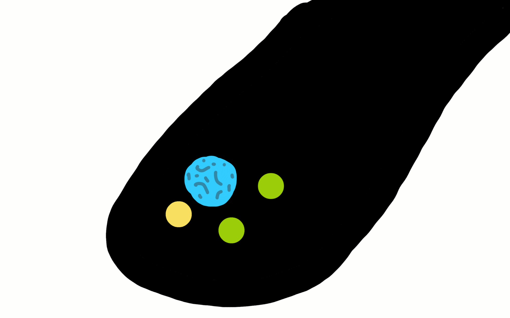
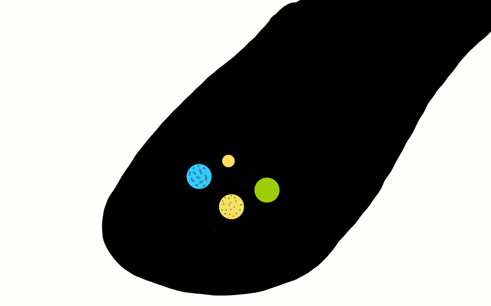
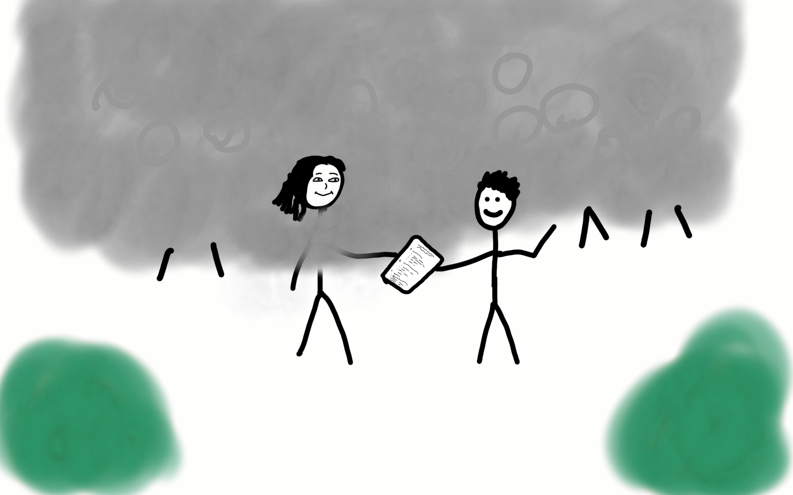

The Magic Marble Box
And Why Science is Like a Snoop Dogg Concert
September 4, 2016
As you go about your day – eating, sleeping, breathing, and doing whatever the hell you do with the rest of your time – you come upon a curious looking man. His head seems to resemble a duck. Or maybe a rabbit… you're not sure.
The man shows you a box, which he tells you is full of marbles. He invites you to play a game where you must predict the percentages of the various marbles in the box. You can guess as many times as you want, but you can't remove the lid of the box to look inside – you can only take one handful of marbles at a time from the hole in the top, before putting them back to draw the next handful.
Setting aside your reservations about listening to a guy who looks like your childhood nightmares and wants you to reach into a strange box, you decide to play. After all, he is wearing a labcoat.
You give the box a good shake, and there seem to be hundreds of marbles. Aside from that, you can't tell anything about them.
Your friend appears for the sake of this metaphor and tells you not to waste your time. She's played it before, and all the marbles were green. Your friend is smart and right about many things, so maybe this deters you from even bothering with the box.
But let's say it doesn't. You're curious and adventurous enough (or foolish enough) that you want to find out for yourself. Why not? You reach in.
 You look at your results, and it seems your friend was mistaken. At this point you could make any number of conclusions, some with more certainty than others. To keep things simple, let's stick with these three:
- Your friend is still correct: the box is full of green marbles. A yellow one got in there by accident, but you can ignore it.
- The box is about 2/3 green marbles, 1/3 yellow marbles
- You have no idea what's in the box, but there are at least green and yellow marbles in there.
You consider your options. Option 1 is convenient, but the evidence seems to disagree. Option 2 seems reasonable with the information you have, but until a second ago you could have just as easily assumed there was only one color in the box. Option 3 gives the least information, but you can say it with the most certainty. It's the most accurate, but maybe not the most helpful.
If you choose Option 1 at this point, your decision suggests you put more faith in your friends and authority figures your life than your own observation or analysis. There's nothing wrong trusting people, but unless you practice more skepticism, you risk falling victim to all kinds of misinformation, wasting your time and money in the process.
If you choose Option 2, it seems likely your next handful might support it. Of the three options, a basic understanding of statistics would push you toward a conclusion like this one, though a sample size of one handful doesn't exactly allow for much confidence.
Option 3 is a bit different. At first this option might seem useless, like a catch-all guess based on what seems certain: you drew yellow and green, so obviously this prediction is true. Right?
Not necessarily. This third option allows you to catch your mistakes early on, in case your most basic assumptions are wrong. Maybe your yellow marble only appeared yellow in that lighting, or it had a speck of white you didn't notice. This brings us to an important point: test your assumptions – the things you know to be “obviously” true – and build up from there.
To keep things simple today, let's say Option 3 passes your tests. The green and yellow marbles you pulled out are indeed as they appear. That done, you move on and draw another handful.
and another…
This is more complicated than you thought.
Life is Like a Box of Marbles
“So the universe is not quite how you thought it was. You'd better rearrange your beliefs, then. Because you certainly can't rearrange the universe.” – Isaac Asimov
Think of the box of marbles as reality, and each handful is an experience, or an experiment. With one or two “handfuls,” you might assume you know the majority of information about the rest of the box. When you have yellow and green marbles, the only information missing seems to be the color of the remaining ones, which you are pretty sure are also green and yellow. You have no way to objectively know the entire contents of the box, so you test your prediction to see if holds, and soon discover new colors, textures, and sizes.
This happens whenever you learn anything new, or meet a new person, or enter a new culture. It has happened time and time again for me as I've spent the last several months traveling India. I don't have strong preferences about the places I eat or stay, so I end up speaking with people from a range of backgrounds, from villagers and slum dwellers to graduate students and corporate executives. Depending on who I talk to, I hear completely different descriptions of the country. While my perspective of India will never be entirely accurate, each conversation is like a handful of marbles that gets me a little bit closer.
India has enjoyed impressive rates of economic growth in recent years (tied for 7th fastest in the world in 2015), and great improvements in education as a result. Despite this, an incredible percentage of the people I speak with here believe in astrology and horoscopes – that the relative position of the stars and planets in the sky when you were born has a profound effect on your life and relationships (which can then be summed up by a psychic or newspaper blurb). This idea of destiny and fate is an attractive one, and many things can seem supernatural before we understand how they work. If you hear a prediction about your life, and you can find instances where it more or less seems to apply, why wouldn't you want to believe?
However, the illusion fades for most of us when we learn concepts like the Barnum Effect, or Confirmation Bias, or any of the many other reasons horoscopes have been debunked. As more people recognize the lack of evidence for its validity, the popularity of astrology has declined into more of a novelty. But the fact that people around the world still believe and base major decisions on it shows just how much we trust in what we want to be true (and choose not to question), rather than what evidence tells us.
Making Adjustments
Want to take a more rational approach? Start by establishing what you know with near-certainty. Find small, specific ways to test your ideas and build from them. Remember, the universe has no obligation to function how you expect it to. Start with your rough understanding of an idea, or person, or box of marbles, and refine your mental framework. Learn to enjoy the liberation of abandoning your first impressions. Your ideas will adjust with each new bit of information, and you will realize how much your initial judgments held you back from understanding things.
If you have any experience in scientific research, you'll find this pattern familiar. If you're like many people though, words like “research” or “science” might be enough to make your eyes glaze over (and I don't mean “The Shocking Trick to Six-Pack Abs in Two Weeks, Backed by Science!”). Even if scientific discovery excites you, the process probably doesn't.
Which highlights the purpose of this post – to show how easily and painlessly you can use science to improve your thinking, so we as a society can stop falling victim to those who profit from our ignorance. Unfortunately, we all like to believe we already think rationally, so this might involve setting aside self-assurance for a second and questioning the things we see as too obvious to question.
People often forget that science is more than just a body of knowledge – it's a means of logical thinking and gathering information. Knowledge alone isn't terribly valuable if it only tells you what occurred in the past, so science is a means of taking these current and past observations (data) a step further. We create and test predictions, analyzing our results and adjusting so we can slowly make our ideas less wrong. Only when many different people test the same concept with consistent results does a hypothesis start to turn into an accepted theory.
As individuals, we don't always have the luxury of reaching a scientific level of confidence about something, because our daily lives require us to make choices in the face of uncertainty. But we can arm ourselves with the mental tools necessary to fight misinformation. We can choose to interpret the things we hear with a healthy skepticism, and think to ourselves “well this might be true, in some specific cases, but am I certain enough that I would act on this knowledge?” And even when we need to act before we feel ready, our actions become their own experiments. The results of our choices provide support or doubt about our predictions, and we adjust from there.
Tip: If you want to save time deciding if a study is even worth reading, take a few moments to understand the necessity of terms like “peer reviewed” and (more importantly) “replicated”. Lately, the field of psychology has taken a particular beating due to how many popular studies were never properly replicated, and thus have almost no basis to be accepted.
Science is like a Snoop Dogg Concert
A major problem occurs when we jump to conclusions based on the information most conveniently available. We don't tend to treat the world as a science experiment, methodically running tests to learn more – we merely make judgments based on what we see, or what we hear from others. You probably recognize this concept, known as “anecdotal evidence.” When it comes to generalizing these stories, the information is nearly useless.
Imagine taking a sample of people at one of Snoop Dogg's performances and concluding that, based on your results, 95% of the world population smokes marijuana. In reality, you could hardly even conclude that 95% of people at this particular Snoop Dogg concert smoke marijuana, and only then if the sampling of people you surveyed was truly random (…and honest). The more specific your prediction, the more testable it is, and the more tests it passes, the more legitimate your theory becomes.
Maybe if you attend several dozen more of his other concerts around the country and find the same results, you could conclude that “95% of people who go to Snoop Dogg concerts in this country” partake in sparking the devil's lettuce. Your theory grows stronger when you find this type of consistency in your results, even in the face of changing variables (such as the new dates, locations, and audiences). If your results were inconsistent across multiple concerts, you would have to take your theory and… ahem… drop it like it's hot.
If your predictions hold up though, your theory might have some standing (after some peer review and replication of course). If you were feeling so bold, you could even extrapolate further and predict that “95% of Snoop Dogg fans smoke marijuana,” though this claim would require much more effort to test (first defining what constitutes a “fan,” then gathering data from people who listen at home rather than only the concert goers, and so on).
Using the info you gathered, you can form predictions such as “if I go to a Snoop Dogg concert and turn to the person next to me, there is a 95% chance they smoke weed.” But then what if smokers tend to flock toward the dense front section of the crowd, away from security? It all becomes more complicated, and we need to get more specific if we want to understand it. Such is the way of science.
Conclusion: Rise of the Citizen Scientists
“It doesn't matter how beautiful your theory is, it doesn't matter how smart you are. If it doesn't agree with experiment, it's wrong.” – Richard Feynman
You may find yourself asking, “why not leave the science to the scientists?” And it's a valid question: why can't we leave this type of thinking to the people who's job it is to do so? Unfortunately, humans are fallible. The systems around scientific research have developed some flaws, and many scientists lack the incentive to promote sound thinking or reasoning. As citizens, this is the most important time to educate ourselves and bring scientific skepticism to our careers and everyday life.
This means acting based on evidence, not just what feels right. It means questioning whether the latest fad diet, market buzzword, miracle product, clickbait headline, or “lifehack” really has any validity to it, or if (more likely), you can call bullshit on the whole thing and use your time for something more useful.
Remember, science doesn't “prove” things with certainty. You can dismiss the remarkable headlines, which tend to only cite a single flawed or misinterpreted study, if they cite anything at all. Even a strong theory with mountains of evidence is merely “accepted,” meaning it has passed enough of our tests that we're comfortable using it for practical purposes. We can be 99.9999% sure of something like the theory of gravity, or of germs, but there is always the possibility we need to alter our theories (or abandon them) in the face of compelling evidence. Science is a method of drawing more marbles from the box, and slowly making our conclusions closer to reality.
It may help to consider that living by these principles makes you as much of a scientist as the guy in the lab with a government grant. You don't need a title or university recognition to practice critical thinking. In both life and laboratory, a good scientist tries to prove herself wrong as quickly and as often as possible. If you merely look for ways to support what you already believe, you're building a skyscraper on a broken foundation.
So rather than jump to the first reasonable conclusion and look for evidence to support it, practice detaching your emotion and desires from your ideas and beliefs. Practice using new information to create predictions of what might be true, and see if the evidence agrees. Find ways to test your assumptions about things that matter to you. Most importantly, learn to build your ideas from the ground up, rather than the top down.
Consider the marble box again. For all we know, the marbles within our reach in the top layers are completely different from those at the bottom. We may have to shake the box to adapt our methods, or even adjust our theories. We can't always tell what makes our observations inaccurate or distorted, so we keep testing in different ways, always getting closer.
If you'd like to know more, you can find related concepts in my other articles. Additionally, these are the books and essays (and people) that inspired this article:
- The Relativity of Wrong, (essay) by Isaac Asimov
- The Meaning of It All, (book) by Richard Feynman
- The Grand Design, (book) by Stephen Hawking
- Thinking, Fast and Slow, (book) by Daniel Kahneman
- The Cook & the Chef: Musk's Secret Sauce, (article) by Tim Urban